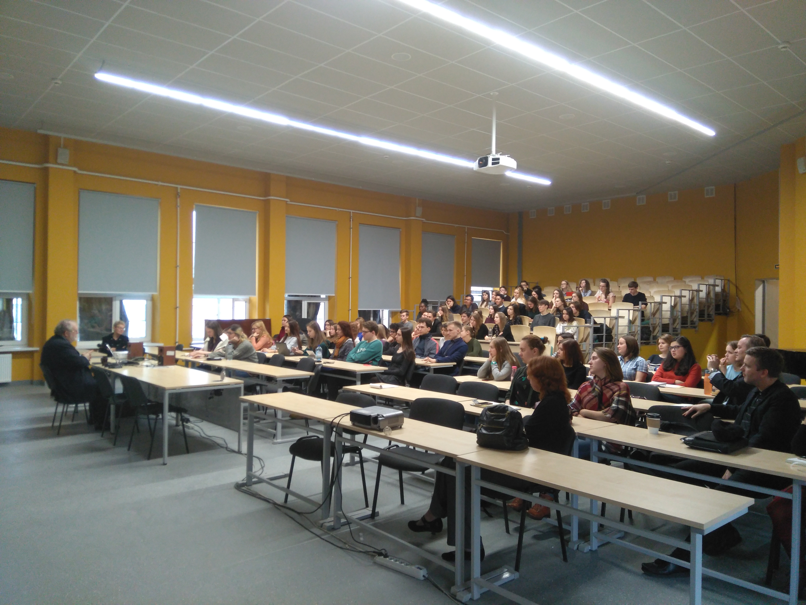

|

|
Добро пожаловать!Петербургский университет Визуальная Школа Эзотерики (не путать с другой ВШЭ позволяет студентам преисполниться познания о репрезентации визуального искусства в литературных (и не только) произведениях! Здесь Вы научитесь искать скрытые смыслы, будете смотреть интересное кино на парах, а также пробовать абсент! Но, предварительно, предлагаем Вам ознакомиться с нашим университетом. |
Обычный выпускник университета "ВШЭ":
Наш ректорДмитрий Токарев родился 6 ноября 1969 года в Ленинграде. Профессор ВШЭ СПб и СПбГУ. |